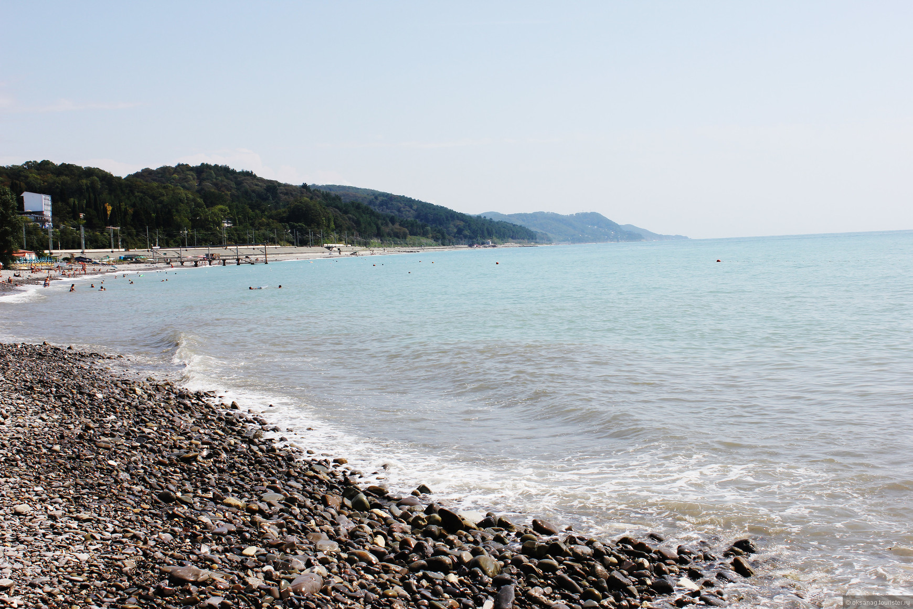

Интересные и красивые места куда можно поехать
Озеро Туманлыкель или Туманное озеро
Название озера – Туманлыкель, что в переводе значит – туманное. В древности на этом месте лежал огромнейшийводоем мореного происхождения. Лишь его остатки дошли до наших времен. Лежит озеро в районе Клухорской долины, в окрестностях курорта Домбай.
От, проложившей свое русло в горном ущелье, речки Гоначхир до озера около 15-ти километров. А от места соединения рек Бу-Ульген и Гоначхир окола часа пути. Путешествие проходит по хорошей заасфальтированной дороге, поднимающейся по крутому горному серпантину.
На пути встречаются солнечные поляны и густые леса. В ранние века эта дорога соединяла колониальную Византию, лежащую на побережье Черного моря,
с Кавказом и ставропольскими степями.

Краснодар - парк "Галицкого"
Краснодар – город с огромным количеством достопримечательностей и развлечений на любой вкус, для взрослых и детей. Среди них исторические, архитектурные памятники,природные ландшафты. Созданные руками человека современные здания и сооружения украшают столицу Кубани, делая ее еще краше. Совсем недавно появился единственный в России по размаху (22,7 га), дизайну, многофункциональности Парк Галицкого в Краснодаре. Этот грандиозный проект, принадлежащий архитекторам Германии,– воплощение европейских и
мировых стандартов в парковой культуре. К сведению туристов!
Дизайн парка уникален, это шедевр современного устройства масштабных зон отдыха. Горожане по достоинству оценили новый объект: превратив его в любимое место отдыха.
Сочи!
Сочи – крупнейший и единственный в России субтропический курорт. Расположен на северо-восточном побережье Черного моря в Краснодарском крае на расстоянии 1620 км от Москвы.Имеет современную транспортную инфраструктуру, является крупным экономическим и культурным центром Юга России.
Глава муниципального образования городской округ город-курорт Сочи Краснодарского края – Алексей Сергеевич Копайгородский.
Якорная щель
Якорная щель – популярное место отдыха в Лазаревском районе Краснодарского края.Курортный микрорайон расположен на берегу Черного моря, в долине реки Хаджипсе, между поселками Шахе и Вардане.
Среди путешественников Якорная щель известна как самое уединенное и экологически чистое место курортной зоны Большого Сочи, и многие выбирают эту часть побережья для семейного отдыха.

Дивноморское
Дивноморское — черноморский поселок, входящий состав города-курорта Геленджика. Дивноморское раскинулось возле устья реки Мезыбь, в 9,5 км с юго-востока от просторной Геленджикской бухты.Постоянное население поселка составляет около 6300 человек – русские, украинцы, армяке и греки. Местные жители и туристы часто называют курорт Дивноморск. В нем нет промышленных производств, и основу экономики составляют туристический бизнес, выращивание винограда и садоводство.
Чек-лист для путешественников:
Не игнорируйте страховой полис — даже в путешествии по России он может спасти от серьезных убытков.
Тщательно продумайте все маршруты и просчитайте расходы, чтобы не попасть в неприятную ситуацию. Особенно если едете с детьми.
Чтобы сэкономить и получить незабываемые эмоции, изучите авторские туры, а не стандартные туристические «пакеты».
Пробейте билеты у нескольких агрегаторов: это поможет найти самое выгодное предложение.
Не бойтесь пользоваться платформами бронирования жилья, но внимательно изучайте условия брони и отзывы о месте и хозяине.